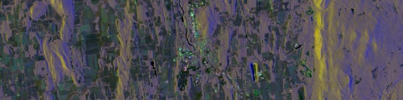

Hello!
I’m a recent (February 2021) Computer Science graduate of Middlebury College. My main interests are in computer vision, image processing, and remote sensing.

Recent Activity
For my senior thesis, I studied speckle noise reduction methods for multitemporal Synthetic Aperture Radar (SAR) image datasets. I developed an improved diffusion-based despeckling algorithm that leverages both temporal and spatial information to improve the quality of the denoised result, especially for small-scale features.
I spent Summer 2020 working on remote sensing research at Middlebury with Professor Andrea Vaccari. Our goal was to classify pavement quality based on X-band Synthetic Aperture Radar amplitude data. We compared pavement data collected by vehicle with SAR data from the COSMO-SkyMed satellite. [group github]
For my senior seminar capstone project in the Fall of 2019, I compared several machine learning methods for automatically classifying land cover (specifically wetland areas) based on LiDAR data and optical imagery. [abstract & poster]
At the end of my semester abroad in the Spring of 2019, I worked as a research assistant at the Laboratoire d’Informatique et d’Automatique pour des Systèmes at l’Université de Poitiers, where I constructed a prototype network of IoT devices using the LoRaWAN protocol.
Miscellanea
In my non-CS life I’m a cellist, formerly of the Middlebury College Orchestra, where I had the pleasure of serving on the “Musical Chairs” as Treasurer for the 2019-2020 academic year and Fall 2020 semester.
I also thoroughly enjoy hiking and birding and enjoying beautiful Vermont. I have a handful of bird-related data science projects on my Github.